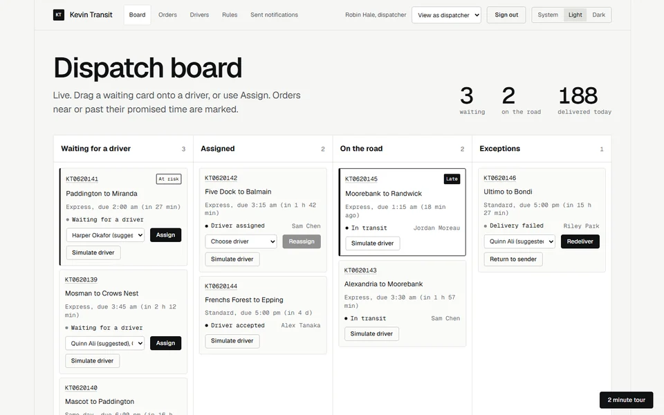
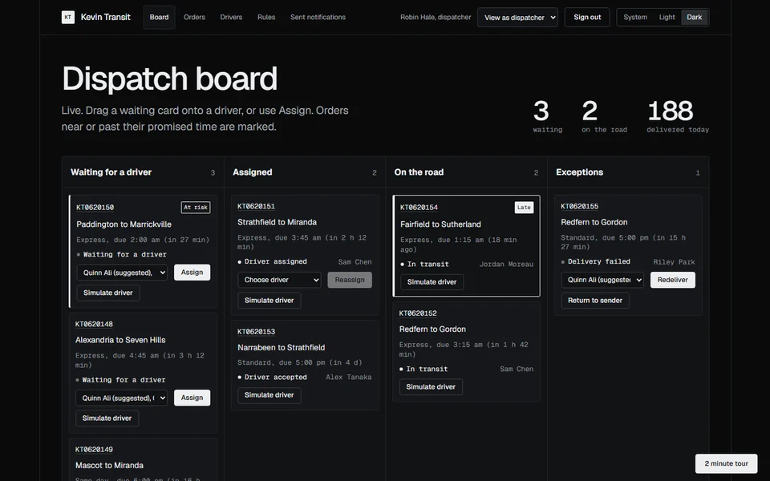

A small Sydney courier firm run end to end. Customers get a quote, pay and follow the parcel. Dispatchers assign drivers on a live board. Drivers finish each job on their phone with a photo and a signature. Sign in as a customer, dispatcher, driver or admin with one click, or create your own customer account with email confirmation. New drivers are invited by the admin, set their own password and start taking jobs once approved.
Built to be used, not shown. Orders follow one state machine that rejects illegal moves and writes an audit record for every change. Accounts have roles, password reset and driver approval, and every visitor works in an isolated session. ASP.NET Core 10 with EF Core and stored procedures, SQL Server, SignalR, React and TypeScript, all in containers with settings in environment variables.
Live updates in about 0.3 seconds. A dispatcher assigns a job in one browser and a second window shows it in 290 to 330 ms. The end-to-end test measures this against the live site and fails at one second.
Built and measured on 600,000 orders and 4.2 million events. On that generated data set, searching by order number took about 0.14 s and a free-text search about 0.7 s, measured over the internet. The live demo runs on a smaller set of 1,500 orders to stay inside a free database allowance; the same generator makes either size.
The first open can be slow. The first time you open the demo it needs a moment to load and wake up, so please give it a little while. After that it is quick.